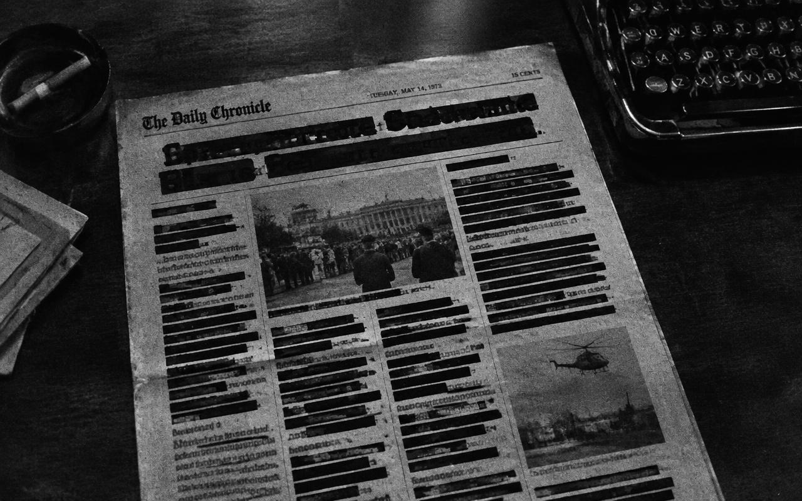

Museu de Arte Contemporânea Alberto Salotti
O direito
de escolher
Entre 1964 e 1985, milhões de brasileiros não puderam escolher quem governava o país. Nesta urna, você vai conhecer esse período, responder a perguntas e experimentar a diferença entre um voto restrito e um voto livre.
Toque nos botões para avançar. Duração aproximada: 5 minutos.
